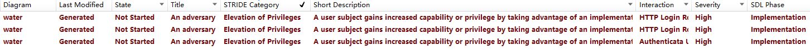

Water supplies, purification facilities, piping infrastructure, surveillance mechanisms, programmable logic controllers, human-machine interfaces, data storage, and server management.
Security Assumptions: It is assumed that the HMI system is protected by appropriate access controls and authentication to ensure that only authorised users can access and operate the HMI interface.
Security Assumptions: We assume that the servers are protected by a variety of physical security measures, e.g., located in a protected server room and managed by means of access control and monitoring. It is also assumed that the server's operating system and applications receive regular security updates and vulnerability patches.
Security Assumptions: We assume the database employs robust access controls to permit only authorised users. Strong passwords and encryption safeguard authentication and data transmission. Additionally, regular updates and patches are applied to address potential vulnerabilities.
Security Assumptions: The setup of PLC devices incorporates proper access controls, restricting programming and configuration to authorised personnel only. Additionally, communication channels for these PLC devices benefit from encryption and safeguards against unauthorised access and tampering. Regular updates for security measures and vulnerability patches are also a given for the device firmware.
Security Assumptions: The premise for operational safety hinges on a securely configured web server. This involves deactivating superfluous services and ports, employing robust password policies, and ensuring encrypted communications. Additionally, the server is expected to stay up-to-date with essential security patches and vulnerability fixes.
Security Notification: Potential threats include unauthorised individuals altering the HMI interface settings. Additionally, cyber risks like phishing, network breaches, or malware can lead to unauthorised access to the HMI system.
External Security Considerations: Although I've made sure our server is secure, it's important to remember that no system connected to the internet is completely invulnerable. There are always risks out there, whether they're remote attacks such as DDoS events or malware infiltrations. I've taken steps to protect our physical servers too, but staying alert to the possibility of unauthorised physical access is always a smart move.
External Security Note: It is crucial to be aware that databases are susceptible to a variety of remote attack vectors, including but not limited to SQL injection, unauthorised entry from remote locations, and the exploitation of remote vulnerabilities. Additionally, the procedures for database backup and recovery are vulnerable to risks such as data leakage and unauthorised access.
External security note: PLC devices may be at risk from a variety of cyber-attacks, including unauthorised remote access, network eavesdropping or tampering with PLC communications. In addition, PLC hardware can also be accessed and tampered with by entities such as someone who has unauthorised access to and changes to the PLC settings.
External security note: Web servers may be exposed to cyber-attack threats such as DDoS attacks, SQL injection, cross-site scripting attacks (XSS) or remote vulnerability exploitation. In addition, misconfigured web servers or insecure applications can lead to sensitive data leakage or unauthorised access.
DFD diagrams here...

STRIDE is Spoofing, Tampering, Repudiation, Information disclosure, Denial of service, and Elevation of privilege corresponding to Confidentiality, Integrity, Availability, Authentication, Authorisation, and Non-repudiation. In this simulation scenario, there are only four threat types: Tampering, Repudiation, Information disclosure and Elevation of privilege.
Threats identified through STRIDE analysis (link to the STRIDE.html file)